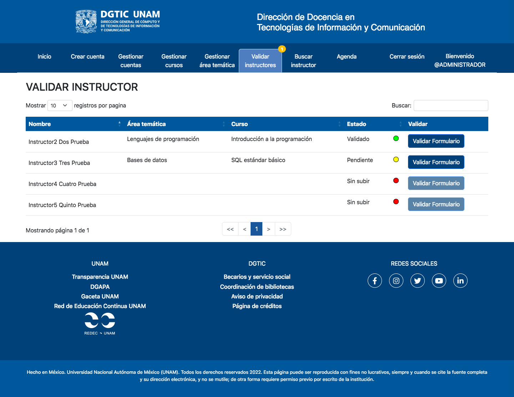

Sistema de Trayectoria Académica
Plataforma de evaluación y gestión de la plantilla docente disponible, así como de la validación de nuevos prospectos para contrataciones de nuevo capital humano de la DGTIC.
PHP
JavaScript
HTML
MySQL
XAMPP
Sistema de Gestión de Inventarios

Plataforma de almacenaje, obtención y monitoreo de descargas de los materiales empleados en los diferentes cursos y diplomados de la DGTIC por parte de la plantilla de Control Escolar.
PHP
JavaScript
HTML
MySQL
XAMPP
Script de Cifrado y Descifrado de Documentos.

Script para cifrar y descifrar todo tipo de documentos mediante el esquema de Shamir.
Python 100%
Sistema de Trayectoria Académica
Este sistema busca mejorar el proceso de evaluación de la plantilla docente por parte de control escolar, constituyendo y facilitando un curriculum vitae, así como la automatización y gestión de datos (y disponibilidad de ellos) de los facilitadores de cursos en activo de la DGTIC. Es decir, se facilitará la evaluación, disponibilidad de horarios y cursos, así como del manejo del capital humano disponible (y sus datos) como instructor.
Sistema de Gestión de Inventarios
Este sistema busca mejorar el proceso de almacenaje, obtención y monitoreo de descargas de los materiales empleados en los diferentes cursos y diplomados de la DGTIC por parte de la plantilla de Control Escolar.

Script de Cifrado y Descifrado de Documentos.
Se trata de un Script programado 100% en Python que, dado un archivo cualquiera, genera un archivo copia encriptado y un conjunto de claves lo que permite su desencriptado dando un método de seguridad de protección de datos. Para el proyecto se empleó el esquema del secreto compartido de Shamir.